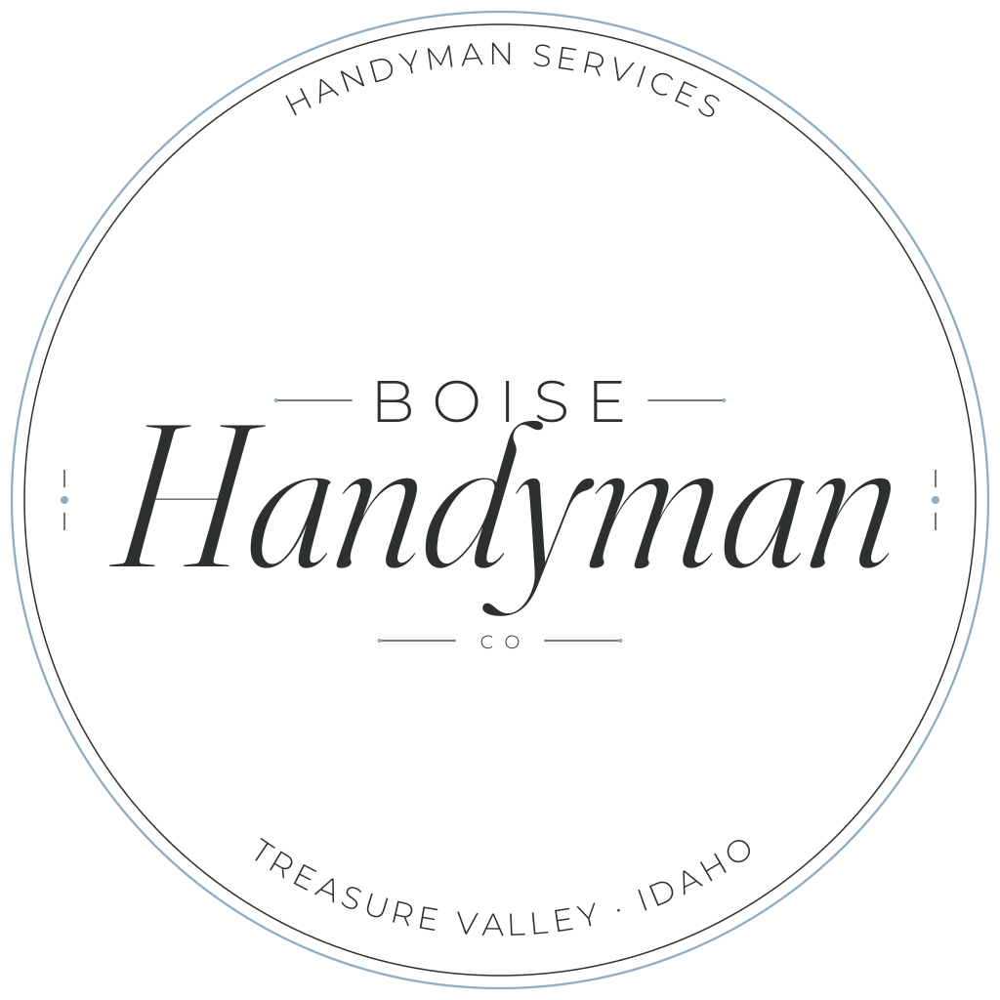
Boise Handyman Co
Handyman Services · Boise & the Treasure Valley, Idaho
CMYK varies by press profile, so take those values from your own swatch file or your printer, not from a screen conversion.
The accent is used in exactly four places: the seal's outer ring and dots, the wordmark's Co., the full wordmark's rule, and the small-size icon's field. Nothing else in the identity is steel blue.
Steel blue holds on either ground: 5.74:1 on charcoal (AA for normal text), 2.14:1 on bone (decorative only). It has most presence reversed. Don't set accent-colored text on bone.
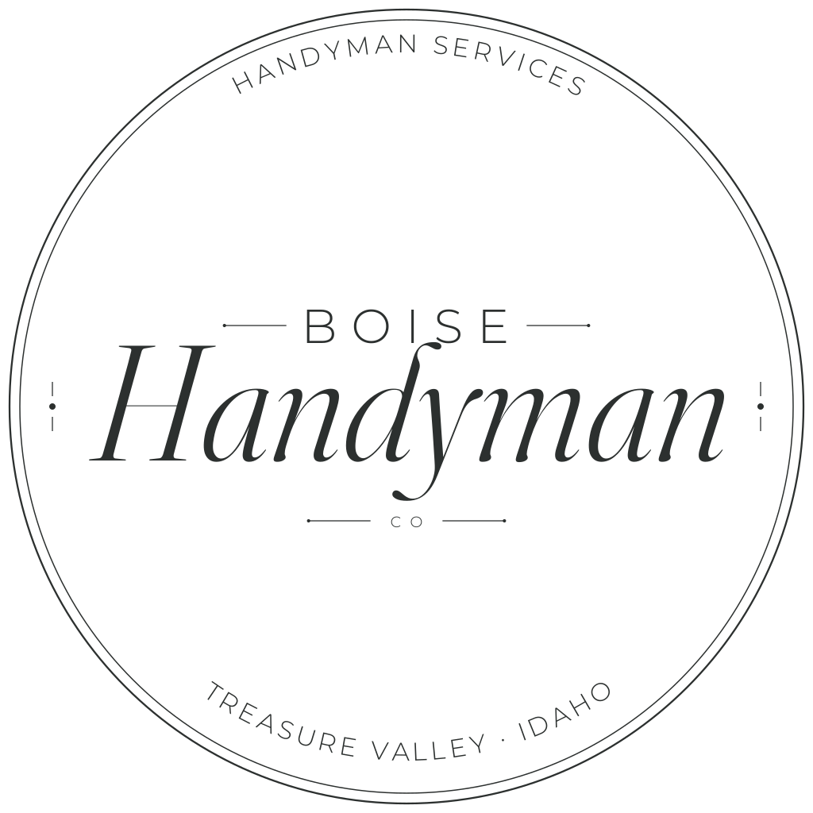
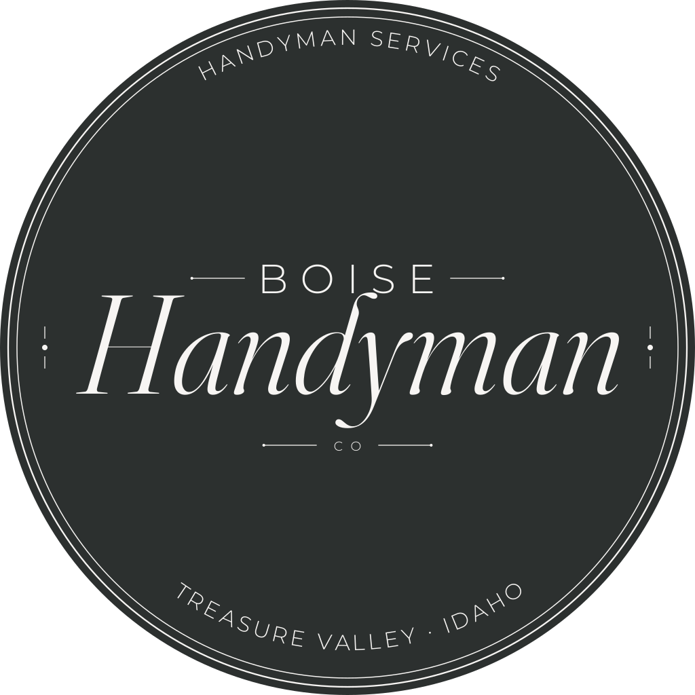
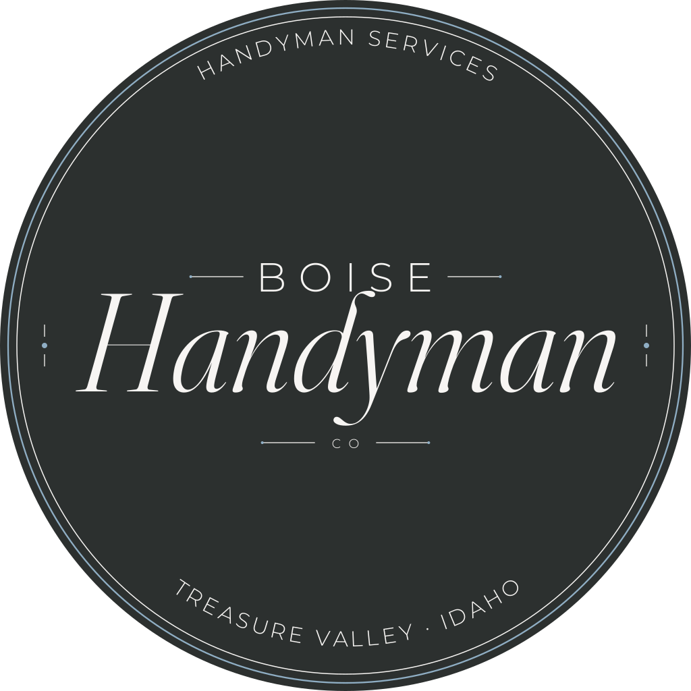
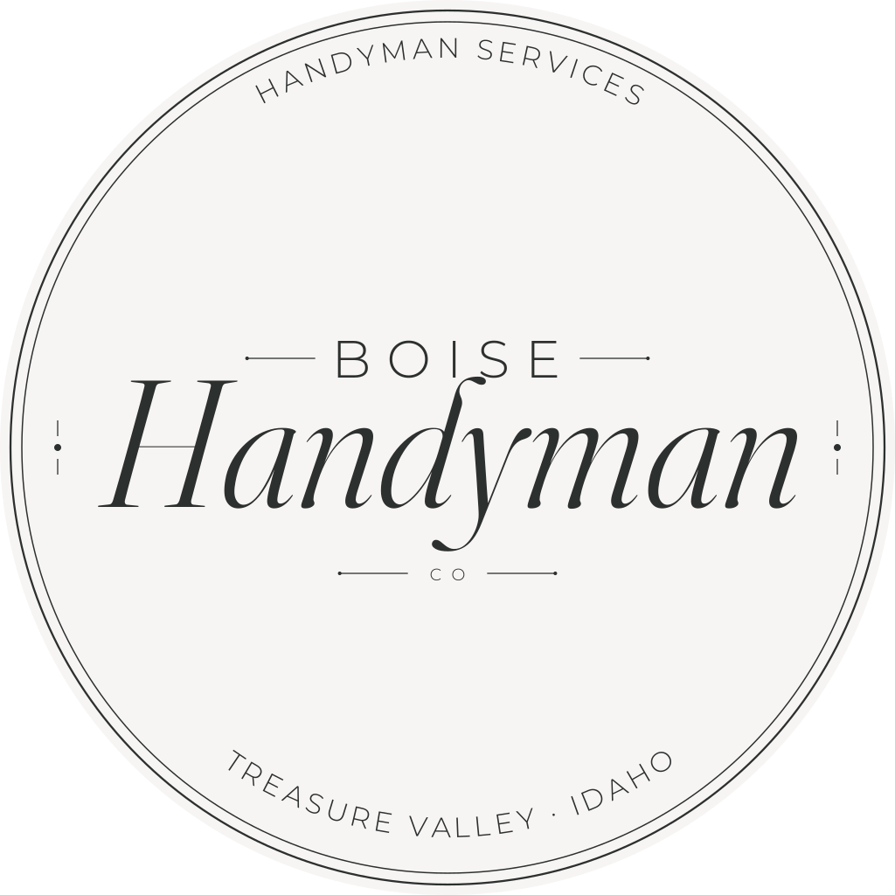
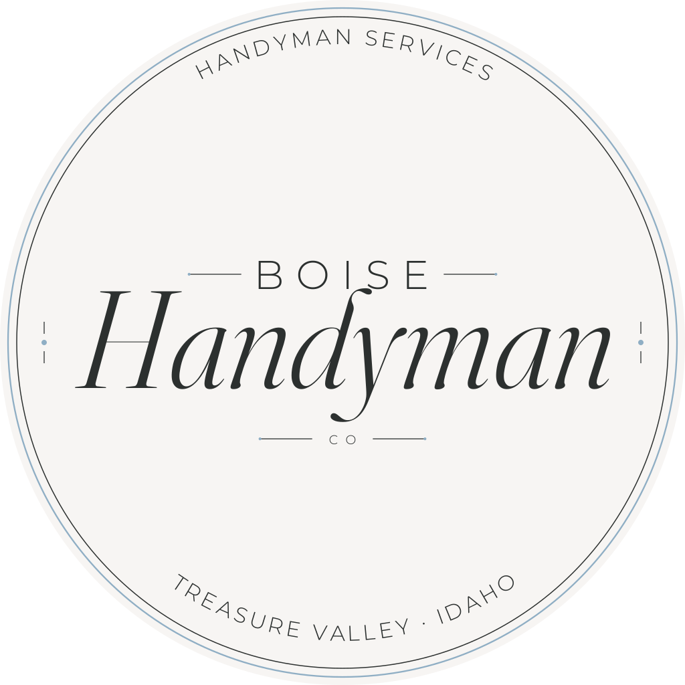
The stacked lockup: name, rule, tagline, location. Use it where the mark can stand alone with room around it: letterhead, the head of a proposal, a truck panel, an email signature footer. The rule carries the accent, as the ring does on the seal.
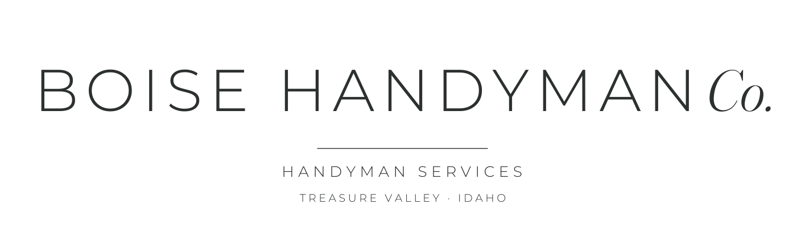
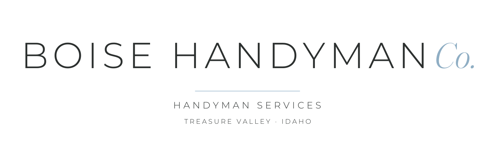
Below about 160 px the seal stops reading, so this is a separately built mark, not a scaled one. The letterform is the italic serif initial from Handyman, and the accent field carries it at very small sizes. Use it for favicons, app icons and social avatars.
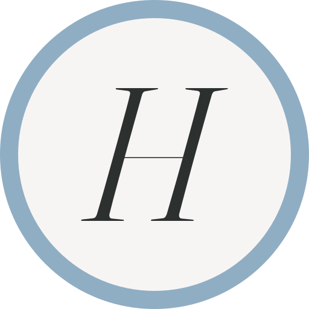
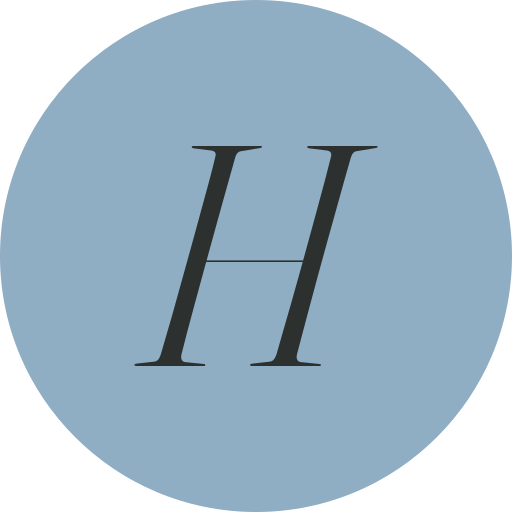
boise-handyman-co/ ├── svg/ │ ├── seal/ light/ dark/ any/ (8 files) │ ├── wordmark/ light/ dark/ (4 files) │ ├── wordmark-full/ light/ dark/ (4 files) │ └── icon/ (5 files) ├── png/ same tree, transparent │ ├── seal/… 1024 / 512 / 256 / 128 / 64 px │ ├── wordmark/… 2400 / 1200 / 600 / 300 px wide │ ├── wordmark-full/… 2400 / 1200 / 600 / 300 px wide │ └── icon/… 512 / 256 / 180 / 128 / 64 / 32 / 16 px └── favicon.ico 16 / 32 / 48 / 64 px
Naming: boise-handyman-co-{mark}-{ink}[-accent]-{size}. SVGs carry no size suffix. Use SVG wherever it is accepted, since it is resolution-independent and all type is outlined, so nothing depends on fonts being installed.
| Face | Used for | License |
|---|---|---|
| Montserrat Light | BOISE, the arc lines, CO, and BOISE HANDYMAN | SIL OFL 1.1 |
| Fraunces Italic (wght 300, opsz 144) | Handyman in the seal, Co. in the wordmark, the icon's H | SIL OFL 1.1 |
Both permit commercial and trademark use. Source font files live in scripts/og-assets/ in the repo.
| Screen | ||
|---|---|---|
| Seal | 160px minimum | 0.75in minimum |
| Wordmark | 600px wide minimum | 2.5in minimum |
Clear space: 8% of the seal's diameter on all sides; for the wordmark, a margin equal to the cap height of the B. Below 160px the seal's arc text stops reading, so use the wordmark or icon instead.
#8FAEC4.